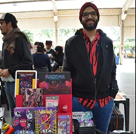
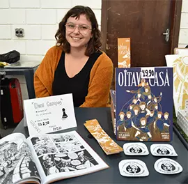
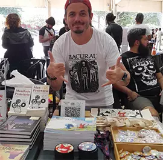
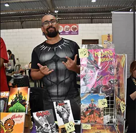
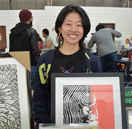
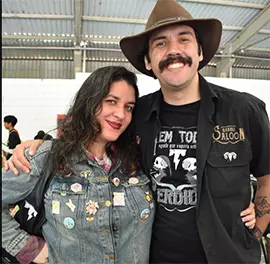
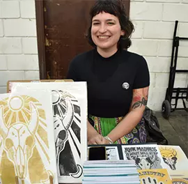
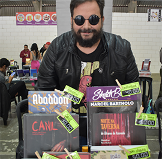

Os Artistas Presentes
Alexandre Esquitini
Alexandre Esquitini usa diferentes elementos para fazer suas artes e histórias, misturando os quadrinhos com a música. Apesar de trabalhar com a área de design em empresas como Burguer King, quis dedicar suas habilidades para a produção de gibis e histórias autorais, tendo publicado 'Masrroma - Uma Cidade Estranhodinária', contando a história de seus habitantes; 'Isolamento Acústico', uma mistura de ilustrações com música; 'Ezin - O Dinossauro do Futuro', coletânea de tirinhas com teor político; e o vindouro 'Mad Marx', descrito como uma distopia política.
Esquitini enxerga os quadrinhos como uma linguagem única para explorar a narrativa do audiovisual e uma boa forma de acumular conhecimento para as gerações futuras.
Dani Campos
Leitora assídua de quadrinhos desde criança, Dani enxerga sua carreira como uma transição natural de leitora para escritora, tendo publicado a obra 'A Oitava Casa', baseada em uma peça do grupo de teatro que participa, em que os personagens são peças de xadrez, e um peão se revolta contra a ordem estabelecida. Dani enxerga os quadrinhos como uma mídia de fácil acesso e de maior impacto que livros e outros, podendo passar mensagens importantes de uma forma leve, além do entretenimento.
Guilherme Capirotinho
Nascido em Minas Gerais, já foi Fatecano, e hoje é cartunista. Sempre consumiu quadrinhos desde criança tanto que sua alfabetização foi feita em parte através de histórias em quadrinhos. Trabalhava com TI, mas com o início dos problemas com bornout, resolveu começar um hobbie e daí vieram as tirinhas. Com o tempo começou a desenvolver ainda mais sua artes, tanto que hoje em dia vive disso.
Douglas Docelino
Um grande leitor de gibis, Douglas trabalha com ilustração desde 2011, atualmente em uma editora e nas horas vagas, se dedicando às suas histórias, tendo lançado duas edições. Segundo o artista, em todos os empregos que trabalhou, sempre tentava arranjar um dinheiro para pagar um curso voltado para a área de desenho, tendo cursado uma universidade de Desenho através do PROUNI e desde então, trabalhando na área da ilustração.
Os quadrinhos possuem uma grande importância em sua vida por fazê-lo enxergar as histórias dos super-heróis como reais, se inserindo nelas, como "outras pessoas fazem com livros", segundo ele mesmo. Eles possuem uma capacidade de mostrar cenas únicas para a mídia em que estão. Especialmente, com a representatividade negra na mídia dos gibis atualmente
Mushi Indeciso
Formada em Design Gráfico em 2018, Mushi produz artes para venda desde então, focadas em insetos, criaturas, plantas e fungos. Segundo Mushi, encontrar outras pessoas que também produziam e gostavam de arte foi um impulso para continuar no ramo, vendo-a como uma boa forma de expressão e esternalizar sentimentos internos, bem como para protestar contra injustiças e passar conhecimento. No seu caso, biológicos.
Lobo Loss
Loss é ilustrador profissional há mais de 10 anos, começando na área da educação ao lecionar aulas de desenho digital, tanto em escolas como a SAGA ou particulares. Trabalhando com desenho desde pequeno e indo se aprimorando, ele se inseriu no mercado autoral por meio de artbooks, quadrinhos e outros. Loss enxerga os quadrinhos como uma forma de mostrar para o mundo, principalmente os mais novos, que é possível seguir uma carreira na arte autoral e ainda ser sucedido no âmbito profissional, usando a FateCON como um exemplo dessa amostra.
Marina Brockof
Desenhista desde sempre, Marina sempre se envolveu com a arte, mas, segundo ela mesma, só começou a vê-la como algo profissional há poucos anos. Sendo graduada em Artes, a artista teve contato com inúmeras formas de expressão, começando a participar dos eventos de quadrinhos em 2022 por meio de 'zines' e atualmente apostando em 'algo mais elaborado". Marina enxerga os quadrinhos como uma linguagem acessível, em que por meio da mistura entre textos e desenhos, o leitor pode se concentrar e ler com mais facilidade.
Marcel Bartholo
Marcel trabalha com quadrinhos desde 2016, sempre tendo a paixão pelo desenho, estudando e lecionando com essa área. Começou com ilustrações e caricaturas, mas, nos quadrinhos, deu a largada com uma história de terror, atualmente explorando mais a questão de roteiro e adaptações. Segundo Marcel, ser quadrinista é uma evolução constante. O artista ainda vê a FateCON como um evento bom para trazer o público para o mundo dos quadrinhos nacionais, além dos maiores existentes no ramo em nosso país.